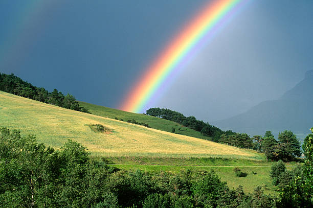

ARCOIRIS
El arco iris representa una de las maravillas más hermosas de la naturaleza,
la difracción de la luz en sus colores primarios representa una figura natural en el cielo,
que sobrepasa toda obra de arte en el planeta tierra y nos impacta con su belleza y colorido.